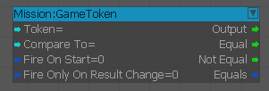
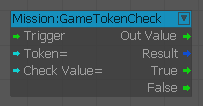
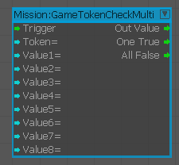
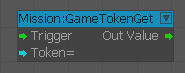
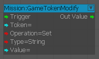
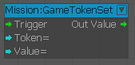
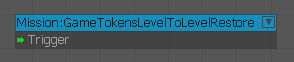
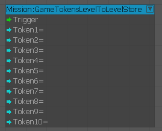
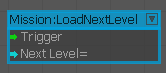

GameToken
GameToken установить/получить. Прослушиватель событий, когда GameToken изменяется с помощью необязательного значения сравнения.

GameTokenCheck
Проверьте, соответствует ли значение игрового жетона значению.

GameTokenCheckMulti
Проверьте, соответствует ли игровой токен какому-либо из значений из списка.

GameTokenGet
Получите стоимость игрового жетона.

GameTokenModify
Работайте на GameToken.

GameTokenSet
Установите стоимость игрового жетона.

GameTokensLevelToLevelRestore
Когда активирован «Триггер», игровые жетоны, ранее сохраненные с помощью узла потока «магазин» (предположительно в конце предыдущего уровня), восстановят свою сохраненную стоимость.

GameTokensLevelToLevelStore
При срабатывании значение всех указанных игровых жетонов будет сохранено внутри системы. Эти значения можно восстановить с помощью узла потока «восстановление» на следующем уровне.

LoadNextLevel
Переход на новый уровень.

Устаревшие узлы
- CheckGameToken
- EndLevelNew
- GetGameToken
- ModifyToken
- SetGameToken